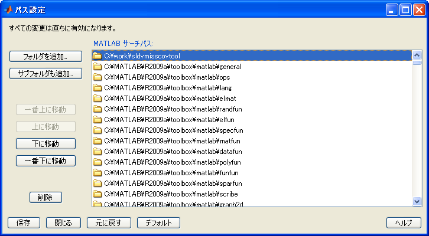
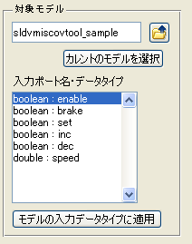
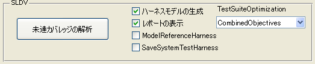
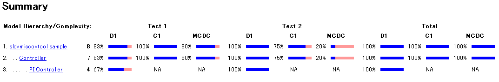
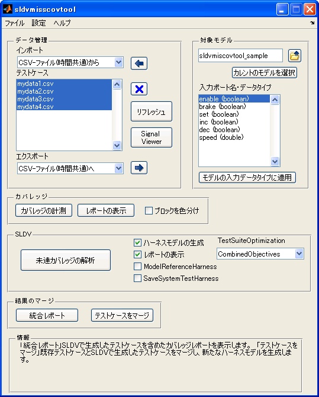
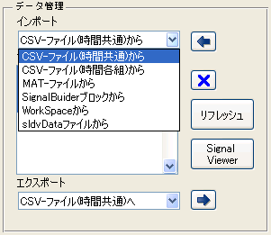
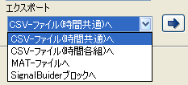

・MATLAB R2007a+ 以降
MATLAB
Simulink
Stateflow (対象モデルにStateflowが含まれる場合)
Simulink Verification and Validation
Simulink Design Verifier (未達成のカバレッジを補うテストベクタを自動生成する場合)
(1) sldvmisscovtool.zip を適当なフォルダに展開します。
(2) MATLAB デスクトップ環境より
「ファイル」→「パス設定」
を開き、(1)で展開したフォルダをMATLABパスに追加します。

(2-1) MATLAB Command Windowより
>> sldvmisscovtool
を実行します。
(1) sldvmisscovtoolを実行します。
>> sldvmisscovtool
(2) 「データ管理」パネル > 「インポート」よりデータ読み込み手法を選択し、 をクリックします。
※読み込み手法はプラグイン形式になっており、選択した手法により読み込み方法が異なります。
ここでは、サンプルとして提供している「CSV-file(時間共通)から」が選択され、フォルダ「cruise_control_data」内のサンプルcsvファイルが読み込まれたものと仮定します。
(3) 「Signl Viewer」ボタンをクリックすることにより、「テストケース」リストボックス上で選択されたデータをグラフに表示します。
(4) 「対象モデル」ペインにて、をクリックし、対象となるモデルを選択します。を選択した場合には、bdrootで与えられるモデルが対象となります。ここでは、本デモに付属のサンプルモデル「sldvmiscovtool_sample.mdl」が選択されたものと仮定します。

(5)
「カバレッジ」パネルにて「カバレッジの計測」ボタンをクリックすることにより、「テストケース」リストボックスで選択されているデータに対するシミュレーションが順次行われ、累積カバレッジデータがベースワークスペース上に「covData」として保存されます。
※
「ブロックを色分け」にチェックを入れてカバレッジの計測を行いますと、ブロック色によりカバレッジの到達状況を確認できます。
(6)
「レポートの表示」ボタンをクリックすると、上述「covData」よりカバレッジレポートが生成され、表示されます。CSVファイルには未達カバレッジが存在することが確認できます。
(7) 「SLDV」パネルにて「未達カバレッジの解析」ボタンをクリックすることにより、、「テストケース」リストボックスで選択されているデータに対するシミュレーションで未達成であったカバレッジ対象に到達するテストベクタを自動生成します。

(8) 「結果のマージ」パネルにて「統合レポート」をクリックすると、「データ管理」で与えられたテストケースと「未達カバレッジの解析」によって自動生成されたテストケースを統合したカバレッジレポートが生成されます。


(9) 「テストケースをマージ」をクリックしますと、「データ管理」で与えられたテストケースと、「未達カバレッジの解析」によって自動生成されたテストケースをマージし、新たなハーネスモデル上のSignal Builderブロックにテストケースを統合します。
本ツールは、次の6つのペインから構成されています。
データファイルなどで与えられるデータをMATLAB WorkSpace上に読み込み、Simulinkの入力として与えられる形式に変換する機能を提供するペインです。読み込まれたデータは任意の形式に出力することも可能です。
「データ管理」ペインにて読み込まれたデータを入力として与える対象モデルを選択します。また、モデルの入力ポートの情報も読み込まれます。
「対象モデル」で選択されたモデルに対し、「データ管理」で読み込まれたデータを与え、モデルカバレッジを測定します。
「カバレッジ」ペインで測定したモデルカバレッジで、100%カバレッジが達成されない場合、Simulink Design Verifierの機能を用いて、未達成のカバレッジに到達するテストベクタをこのペインで解析することができます。
「データ管理」で与えられたデータと、「SLDV」ペインで与えられたテストベクタをマージする機能を提供します。
操作のヒントをこのペインで表示します。

任意のデータ形式をMATLAB WorkSpace上に、Simulinkの入力として与えることができる形式にインポートします。インポートされたデータはMATLABワークスペース上の変数 simdata として定義されます。インポート可能なファイルの書式は、ユーザが任意に作成することができます。作成方法は「プラグインの詳細」を参照してください。本ツールにはサンプルとして、次の入力形式があらかじめ用意されています。
CSV-ファイル(時間共通)
すべての信号に共通の時間列を第一列に持ち、その時間軸に対して、信号の値が与えられるCSVファイルからデータを読み込みます。
例：
time, SigA, SigB
0.00, 0, 0
0.10, 10, 0
0.15, 5, 0
0.25, 5, 1
0.30, 7, 0
0.40, 7, 0説明:
1行目には、テストケース名を記述します。このテストケース名は、「テストケース」リストボックスに表示される名前になります。
2行目には、信号名を記述します。第1列は時間に対応し、第2列はインポートブロックの1番ポートに、第3列はインポートブロックの第2ポートに対応しま す。モデル上のインポートブロックと同名にする必要はありませんが、エクスポート関数を記述する際には、この信号名情報を利用することができます(例: Signal Builderブロックへエクスポートする際には、Signal Builderブロック内の信号名として与えられます)。
3行目以降には、信号値を記述します。
制約事項： この形式でCSVファイルを記述する場合には、次の制約があります。
n行目に与えられた時間データをt(n) としたとき、t(n+1) - t(n) > 0 が常に成立すること。
CSV-ファイル(時間各組)
各信号値に対して、個別の時間軸データを持つCSVファイルからデータを読み込みます。
例：
time, SigA, time, SigB
0, 0, 0, 0
0.1, 10, 0.25, 1
0.15, 5, 0.3, 0
0.3, 7, 0.4, 0
0.4, 7,説明:
1行目には、テストケース名を記述します。このテストケース名は、「テストケース」リストボックスに表示される名前になります。
2行目には、信号名を記述します。第1列は時間に対応し、第2列はインポートブロックの1番ポートに対応する信号名、第3列は時間、第4列はインポートブロックの第2ポートに対応します。つまり、2n-1列 (n=1,2,...) は時間に対応し、 2n列は、n番目のインポートブロックに対応します。モデル上のインポートブロックと同名にする必要はありませんが、エクスポート関数を記述する際には、信号名情報を利用することができます。
3行目以降には、時間と信号値の組を記述します。それぞれの信号に独立の時間情報を与えることができます。
制約事項： この形式でCSVファイルを記述する場合には、次の3点の制約があります。
n行目に与えられた時間データをt(n) としたとき、t(n+1) - t(n) > 0 が常に成立すること。 すべての信号の最終の時間(上記例では0.4秒)を共通にしてください。 すべての信号は、最終信号値が前回値と同一の値を持つように指定してください(上記の例では、 SigAは信号値0.7が0.3秒、0.4秒で同一。SigBは信号値0が0.3秒、0.4秒で同一)。
MAT-ファイル
指定したMATファイルから入力 データを読み込みます。MAT-ファイルには、変数simdataが含まれていなければなりません。さらにsimdataは時間付き構造体フォーマットで なければなりません。ここで、時間付き構造体に関する詳細なドキュメントは、次をご参照下さい。
ヘルプ > Simulink > User Guide > シミュレーションの実行 > シミュレーションデータのインポートとエクスポート > 出力データをMATLABワークスペースにエクスポート > フォーマットオプション > 時間付き構造体
Help > Simulink > Importing and Exporting Data > Exporting Data to the MATLAB Workspace > Format Options > Structure with time
Signal Builder
選択されている(gcbコマンドの結果が指す)ブロックがSignal Builderブロックの場合、全てのグループの信号データをインポートします。
WorkSpace
ワークスペース上に時間付き構造体フォーマットで定義された変数 simdata を読み込みます。
sldvData
Simulink Design Verifierによって解析された結果として作成される sldvData フォーマット形式のMATファイルを読み込みます。

インポート機能によって作成されたワークスペース変数 simdata を任意の形式に出力します。出力ファイルの書式は、ユーザが任意に作成することができます。作成方法は「プラグインの詳細」を参照してください。本ツールにはサンプルとして、次の入力形式があらかじめ用意されています。

CSV-ファイル(時間共通)
選択されているテストケースを、すべての信号に共通の時間列を第一列に持ち、その時間軸に対して、信号の値が与えられるCSVファイルとして書き出します。
CSV-ファイル(時間各組)
選択されているテストケースを、各信号値に対して、個別の時間軸データを持つCSVファイルとして書き出します。
MAT-ファイル
選択されているテストケースを、MATファイルとして書き出します。MATファイル内には simdata 変数が保存されます。
Signal Builder
新規モデルを作成し、 選択されているテストケースを、新たに作成されたSignal Builder ブロックに書き出します。
本ツールでは、プラグインという仕組みにより、任意のデータ形式を読み込んだり、任意のデータ形式に書き出したりすることが可能です。
(2-3-1) プラグインとして認識される条件
・ sldvmisscovtool.m と同じフォルダに存在する
・ インポート関数の場合 import から始まる関数M-ファイル、エクスポート関数の場合 export から始まるM-ファイルである
例：インポート関数
importCSVfile.m importMATfile.m importWorkSpace.m
importCSVfile2.m importSignalBuilder.m importsldvDatafile.m例：エクスポート関数
exportCSVfile.m exportMATfile.m
exportCSVfile2.m exportSignalBuilder.m(2-3-2) プラグイン関数フォーマット : インポート関数
本ツールインストールフォルダ内に含まれる _importTemplate.m に詳細が記述されています。
(2-3-3) プラグイン関数フォーマット : エクスポート関数
本ツールインストールフォルダ内に含まれる _exportTemplate.m に詳細が記述されています。
このペインでは、「データ管理」ペインにて読み込まれたデータを入力として与える対象モデルを選択します。
をクリックすると、ファイル選択画面より、対象とするモデルファイルを選択します。一方で、を選択した場合には、bdrootで与えられるモデルが対象となります。選択後には、モデルが開かれ、内部的にモデルのコンパイルコマンドが発行されます。
modelname([],[],[],'compile')
コンパイルが実行されることにより、モデルの最上位階層に存在するInportブロックのデータタイプが判明し、「入力ポート名・データタイプ」リ ストに表示されます。解析されたデータタイプは、「モデルの入力データタイプに適用」ボタンをクリックした場合や、「カバレッジ」ペインにおいてカバレッ ジ測定が実行される前に使用されます。
「モ デルの入力データタイプに適用」をクリックすると、「データ管理」ペインで読み込まれ、ベースワークスペースに定義されている時間付き構造体変数 simdata のデータタイプを、モデルの入力ポートのデータタイプと一致するようにキャストします。なお、このキャストは必ずしも必要ではなく、「カバレッジ」ペイン における「カバレッジ測定」ボタンをクリックした際にも、モデルの入力ポートのデータタイプと異なる場合には、キャストを実施するかの確認がなされます。
「カバレッジの計測」ボタンをクリックすると、「テストケース」リストボックスで選択されているすべてのデータが、モデルの入力ポートのデータタイ プと一致しているかどうかの確認がおこなわれます。データタイプが一致しない場合には、キャストを実施するかどうかの確認画面が表示されます。
ここで、「いいえ」を選択した場合には、操作が中止され、何も行われません。「はい」を選択した場合には、「テストケース」リストボックスで選択さ
れているすべてのデータに対するシミュレーションが順次行われ、カバレッジ測定が行われます。選択したテストケースをモデルの入力として与えた場合に、シ
ミュレーションでエラーが発生する場合には、「テストケース」リストボックスの選択が外されます。また、累積カバレッジデータはベースワークスペース上に
「covData」として保存されます。
※
「ブロックを色分け」にチェックを入れてカバレッジの計測を行いますと、ブロック色によりカバレッジの到達状況を確認できます。
「レポートの表示」ボタンをクリックした場合には、累積カバレッジデータ covData に対して、カバレッジ測定レポートが表示されます。
「未達カバレッジの解析」ボタンをクリックすると、「カバレッジ」ペインで測定したモデルカバレッジで100%カバレッジが達成されない場合、Simulink Design Verifierの機能を用いて、未達成のカバレッジに到達するテストベクタを解析することができます。
このペインは、Simulink Design Verifierのライセンスを持っていない場合には表示されません。
テストケースの自動生成機能に関するオプション設定がチェックボックスで用意されています。
「統 合レポート」ボタンをクリックすると、「カバレッジ計測」ボタンをクリックした際にカバレッジ測定が行われた、「テストケース」で選択されているテスト ケースで満たされたカバレッジ対象と、「未達カバレッジの解析」で求められた自動生成されたテストケースで達成されたカバレッジ対象に対し、合算がおこな われたカバレッジレポートを生成します。
「テストケースをマージ」をクリックすると、
「テストケース」リストボックスで選択されているテストケース + 「未達カバレッジの解析」によって自動生成されたテストケース
がSignal Builderに含まれるテストハーネスモデルが作成されます。
このボタンによって作成されたSignal Builderブロックから、再び「データ管理」ペインにおける「Signal Builderブロックから」インポートを行うことにより、テストケースを再び入力として扱うことができるようになります。